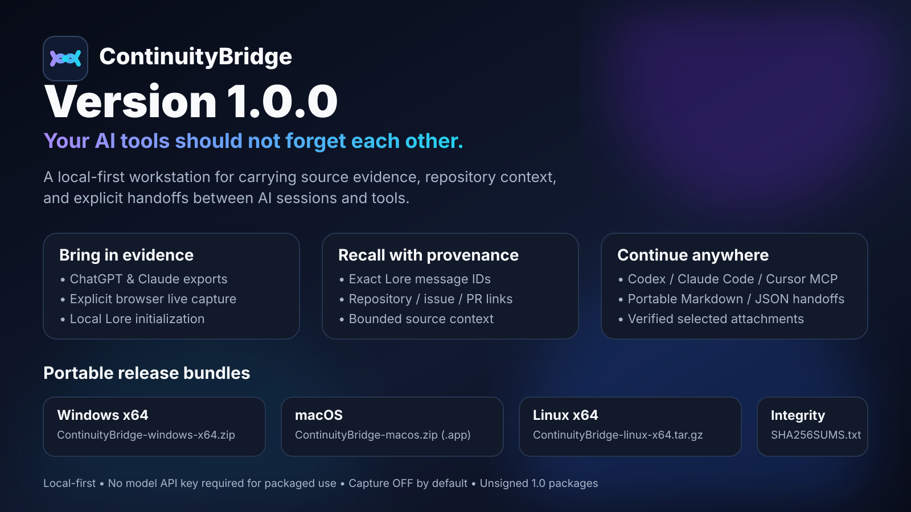

Your AI tools should
not forget each other.
ContinuityBridge is a local-first workstation for importing or explicitly capturing user-authorized conversation evidence, recalling exact source context, attaching repository coordinates, and carrying bounded evidence-backed handoffs into the next AI session.

Download ContinuityBridge 1.0.0
The first public release is distributed as archives, not an installer. The application runtime is bundled; packaged users do not need a model API key, global Node installation, or global Lore installation.
ContinuityBridge-windows-x64.zipContinuityBridge-macos.zipContinuityBridge-linux-x64.tar.gzSHA256SUMS.txtUnsigned 1.0 packages: Windows SmartScreen or macOS Gatekeeper may show the platform's normal warning for an unsigned internet-downloaded application. Use the OS's normal per-app review/allow path; do not disable platform security globally.
Bring in evidence. Recall it. Continue with provenance.
History + explicit Capture
Import supported ChatGPT/Claude exports, initialize supported existing local transcript sources through bundled Lore, or explicitly capture recognized visible browser conversations.
Recall with real anchors
Search Lore, use exact source/session/message identifiers, inspect bounded context, and send selected evidence directly into the continuation workflow.
Repository-aware continuity
Link exact evidence to a Git repository plus optional issue and pull-request coordinates without duplicating conversation content into a second database.
MCP Connections
Preview and explicitly apply Lore MCP configuration for supported installed Codex, Claude Code, and Cursor clients through the packaged ContinuityBridgeLore launcher.
Portable handoffs
Build Markdown/JSON continuation packages with exact Lore evidence, optional repo state, issue/PR coordinates, and explicitly selected hash-verified local artifacts.
Privacy by product boundary
Capture is OFF by default, the receiver is loopback-only and bearer-authenticated, client configuration mutation is explicit, and user evidence lives outside the replaceable application bundle.